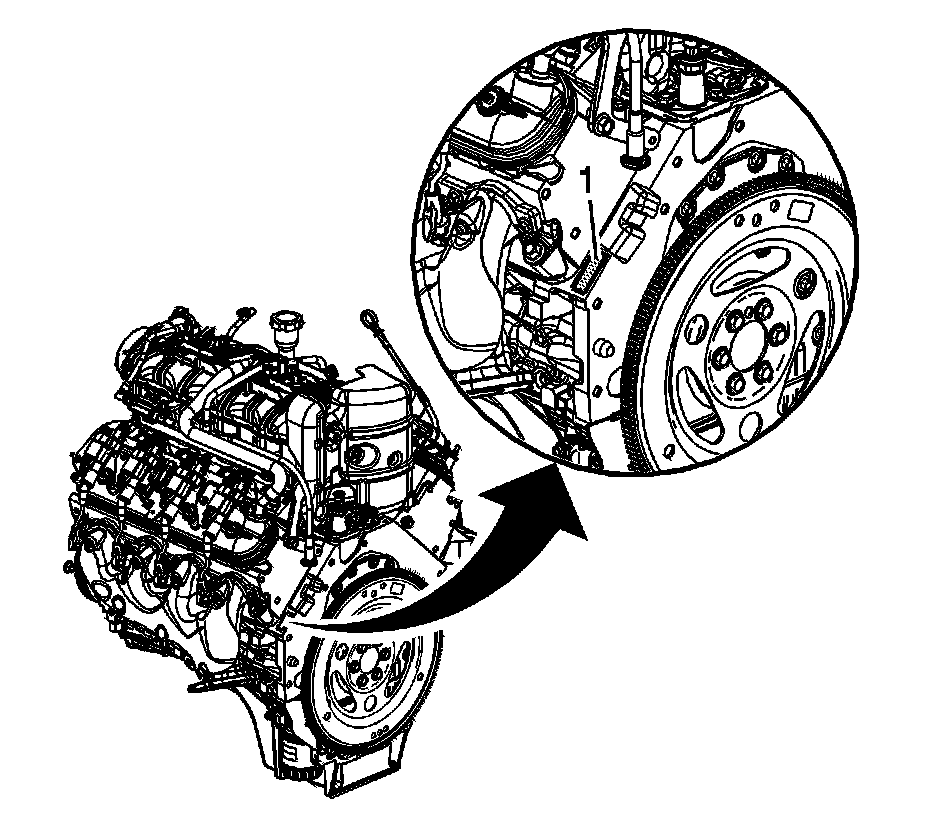

Engine: Application and ID
Engine Identification

The vehicle identification number (VIN) is located on the left side rear of the engine block (1) and is typically a 9 digit number stamped or laser-etched onto the engine at the vehicle assembly plant.
^ The first digit identifies the division.
^ The second digit identifies the model year.
^ The third digit identifies the assembly plant.
^ The fourth through ninth digits are the last 6 digits of the VIN.